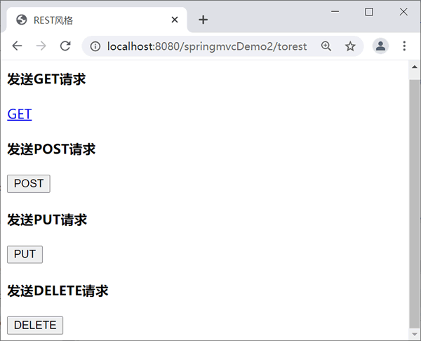

首页 > 编程笔记
Spring MVC REST风格
REST（Representational State Transfer）即表述性转移，是目前最流行的一种软件架构风格。它结构清晰、易于理解、有较好的扩展性。
下面举例说明 REST 风格的 URL 与传统 URL 的区别。
但是也有弊端，对于国内项目，URL 参数有时会传递中文，而中文乱码是一个令人头疼的问题，所以我们应该根据实际情况进行灵活处理。很多网站都是传统 URL 风格与 REST 风格混搭使用。
Spring REST 风格可以简单理解为：使用 URL 表示资源时，每个资源都用一个独一无二的 URL 来表示，并使用 HTTP 方法表示操作，即准确描述服务器对资源的处理动作（GET、POST、PUT、DELETE），实现资源的增删改查。REST 概念较为复杂，我们不过多解释，大家简单了解 Spring MVC 的 REST 风格的简单使用即可。
- GET：表示获取资源
- POST：表示新建资源
- PUT：表示更新资源
- DELETE：表示删除资源
下面举例说明 REST 风格的 URL 与传统 URL 的区别。
/userview.html?id=12 VS /user/view/12
/userdelete.html?id=12 VS /user/delete/12
/usermodify.html?id=12 VS /user/modify/12
但是也有弊端，对于国内项目，URL 参数有时会传递中文，而中文乱码是一个令人头疼的问题，所以我们应该根据实际情况进行灵活处理。很多网站都是传统 URL 风格与 REST 风格混搭使用。
示例
由于 HTTP 不支持 PUT 和 DELETE 请求，所以需要将 DELETE 和 PUT 请求转换成 POST 请求，在 web.xml 中配置过滤器 HiddenHttpMethodFilter。
<!-- HiddenHttpMethodFilter过滤器可以将POST请求转化为put请求和delete请求! -->
<filter>
<filter-name>hiddenHttpMethodFilter</filter-name>
<filter-class>org.springframework.web.filter.HiddenHttpMethodFilter</filter-class>
</filter>
<filter-mapping>
<filter-name>hiddenHttpMethodFilter</filter-name>
<url-pattern>/*</url-pattern>
</filter-mapping>
新建 rest.jsp 代码如下。
<%@ page language="java" contentType="text/html; charset=UTF-8"
pageEncoding="UTF-8"%>
<!DOCTYPE html PUBLIC "-//W3C//DTD HTML 4.01 Transitional//EN" "http://www.w3.org/TR/html4/loose.dtd">
<html>
<head>
<meta http-equiv="Content-Type" content="text/html; charset=UTF-8">
<title>REST风格</title>
</head>
<body>
<h4>发送GET请求</h4>
<a href=" user/1">GET</a>
<h4>发送POST请求</h4>
<form action="user/1" method="post">
<input type="submit" value="POST" />
</form>
<!-- 发送PUT和DELETE请求时，需要添加一个隐藏域 -->
<h4>发送PUT请求</h4>
<form action=" user/1" method="post">
<input type="hidden" name="_method" value="PUT" /> <input
type="submit" value="PUT" />
</form>
<h4>发送DELETE请求</h4>
<input type="hidden" name="_method" value="DELETE" />
<form action=" user/1" method="post">
<input type="hidden" name="_method" value="DELETE" /> <input
type="submit" value="DELETE" />
</form>
</body>
</html>
下面通过 @RequestMapping 映射请求中的 method 参数实现四种请求方式的调用，UserController 代码如下。
package net.biancheng.controller;
import org.springframework.stereotype.Controller;
import org.springframework.web.bind.annotation.PathVariable;
import org.springframework.web.bind.annotation.RequestMapping;
import org.springframework.web.bind.annotation.RequestMethod;
@Controller
public class UserController {
@RequestMapping("/torest")
public String torest() {
return "rest";
}
@RequestMapping(value = "/user/{id}", method = RequestMethod.GET)
public String hello(@PathVariable Integer id) {
System.out.println("test rest get:" + id);
return "success";
}
@RequestMapping(value = "/user/{id}", method = RequestMethod.POST)
public String hello() {
System.out.println("test POST:");
return "success";
}
@RequestMapping(value = "/user/{id}", method = RequestMethod.DELETE)
public String helloDelete(@PathVariable Integer id) {
System.out.println("test rest delete:" + id);
return "success";
}
@RequestMapping(value = "/user/{id}", method = RequestMethod.PUT)
public String helloPUt(@PathVariable Integer id) {
System.out.println("test rest put:" + id);
return "success";
}
}
访问地址：http://localhost:8080/springmvcDemo2/torest，运行结果如下。

依次点击请求按钮，控制器输出结果如下。
test rest get:1
test POST:
test rest put:1
test rest delete:1
关注公众号「站长严长生」，在手机上阅读所有教程，随时随地都能学习。内含一款搜索神器，免费下载全网书籍和视频。

微信扫码关注公众号